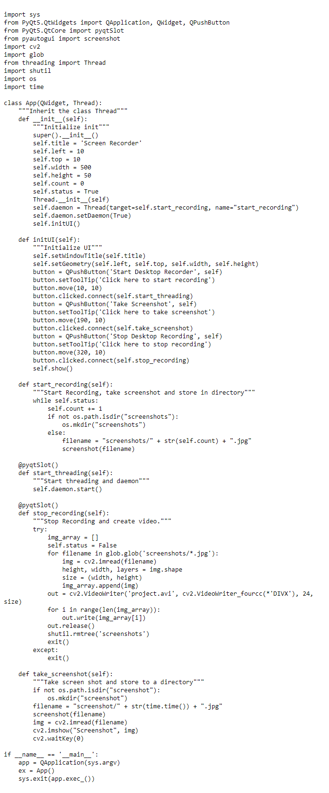

Screen recorder using Python
Python is a widely used general-purpose language. It allows performing a variety of tasks. One of them can be recording a video. It provides a module named pyautogui which can be used for the same. This module along with NumPy and OpenCV provides the way to manipulate and save the images (screenshot in this case)
Modules needed
pyautogui:
To install pyautogui type the below command in the terminal.
pip install pyautogui
OpenCV:
To install OpenCV type the below command in the terminal.OpenCV is the huge open-source library for computer vision, machine learning, and image processing and now it plays a major role in real-time operation which is very important in today’s systems.
pip install opencv-python
Glob:
To install glob type the below command in the terminal.
pip install glob
PyQt5:
To install PyQt5 type the below command in the terminal. The PyQt module can be used to create desktop applications with Python.
pip install PyQt5
shutil:
To install shutil type the below command in the terminal.
pip install shutil
Below is the implementation.
First, import all the required packages.

for
Source Code
click here.
Please reach me out over LinkedIn for any query.Thanks for reading!!!